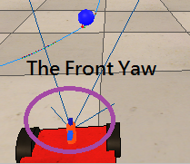
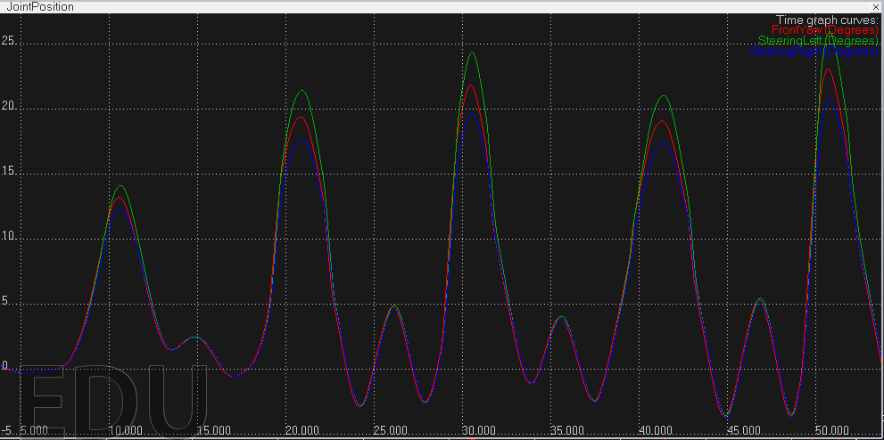
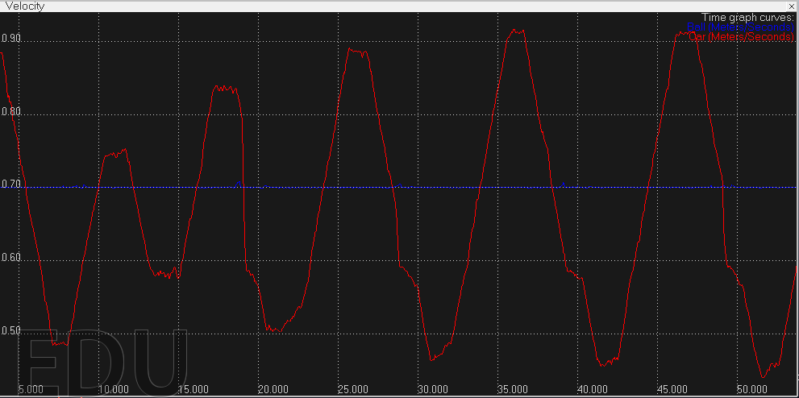

Final Project - Ball Follower
● Motivation
Few weeks ago, we play RobotCup using EV3 robots, but EV3 Robot does not has appropriate sensor to see the ball, our robot is blindhold running in the field.
How to make the robot to find the target?
The first goal is to make the robot has ability to recognize the ball precisely, then the robot can know which directions the robot should move.
As a result, I decided to make a robot which has ability to track and follow the ball as my final project.
● Abstract
Combine with the topic: From point A to point B, I make the car's starting point as A, and the ball is the point B, hence the point B is not fixed.
In this final project, I use camera to capture the view, then using two filter to detect the target ball.
After some calculation, the camera's data will become useful information, then the robot can have the appropriate directions and movement.
● Camera Vision
There are 3 steps in Image Processing:
1. Read what the Camera see.
2. Using Selective Color filter to select the target color(blue).
3. Using Blob Detection filter to detect and focus on the target.
|
|
|
|
|
|
The blob detection filter will have some returns values:
blob count, size, orientation, position x, poistion y, width, height
What I used?
1. Position x: To decide the Yaw rotation speed.
If the ball is close to the border, the yaw rotation should be increase, otherwise decrease.
2. Size: Since this sensor do not has the depth information, I use target's size to conclude the ball and car's distant.
Smaller-> getting far, Bigger -> getting closer.
It is a trigger to change the car's velocity.
● The Front Yaw Joint

The front yaw joint is set in motion mode.
According to position x to set the appropriate joint rotate velocity.
Each wheels spring dumper(joint) are all in force/torque mode.
Get the front yaw joint's position and do some calculation to get the desired steering angle.
desired steering angle = atan *( l*( tan( Front Yaw Position )/l))
l = distance between front and rear wheels
steering Angle Left = atan( l/( -d+ l/tan(desired steering angle)))
steering Angle Right = atan( l/( d+ l/tan(desired steering angle)))
2*d = distance between left and right wheels
● Joint Position (degrees/sec)
FrontYaw ----
Left Wheel ----
Right Wheel ----

The wheel turns left, positive degrees.
The wheel turns right, negative degrees.
● Car View
|
|
|
|
|
|
● Velocity (meter/sec)
Car Speed ----
Ball Speed ---- 0.7 (constant)

● Simulation
Ball Following Robot using Vision Sensor - Simulation by V-Rep
Source Code
Reference
1. video: 01: Line-Following Robot | V-Rep Tutorial
2. video: 02: Simple Visual Servoing | V-Rep Tutorial
3. doc: Virtual Robot Experimentation Platform USER MANUAL